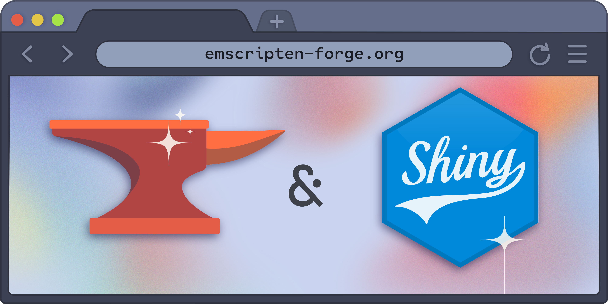

Blog#
2026-10-09 - Static Shiny Dashboards in the Browser with Emscripten-Forge
We are excited to announce the integration of Shiny with emscripten-forge, enabling fully-static Shiny dashboards that run entirely in the browser! They can also be published to GitHub pages with a single template repository.

2026-10-07 - Mixed R and Python workflows in the browser with Emscripten-Forge
Programming languages like R or Python have their own package management systems, which are typically language-specific. Native extensions often came as an afterthought, by allowing the platform-specific binaries to be bundled within a package. However, this model limits reuse and shared binary dependencies across packages from different ecosystems.
2025-04-30 - Major updates
When emscripten-forge started, packages where build hosted on a quetz packge server. Now we moved to prefix.dev
2024-05-24 - Emscripten is now a proper package
So far, the emscripten package was a bit of a hack. It relied on a text file
~.emsdkdirin the home directory which contained the directory of the emscripten installation. This was not very nice, because it was hard to build packages for several emscripten versions.2024-05-10 - Rust/PyO3 Support
Finally, we have added support for Rust/PyO3/maturin packages. This allows to build packages like * cryptography, pydantic-core and pycrdt.
2024-05-10 - Local builds with pixi
Setting up a local build environment for emscripten-forge used to be a very complicated process with many dependencies and many steps. But with the usage of pixi this has become trivial!
2024-05-10 - Goodby boa, welcome rattler-build
When emscripten-forge was started, we relied on
https://github.com/mamba-org/boawhich is a conda-build like tool but using more of mamba then conda. This was always a bit brittle and we had to maintain a fork ofboato make it work withemscripten-wasm32. Testing did not work at all, because test dependencies could only be specified for thetarget_platformand not for thehost_platform, ie only for emscripten-wasm32 and not for linux-64 (or any other host platform). This means there was no sane way to install the “emulators” to run the wasm code on the host platform. Also the error messages were not very helpful and the code was hard to understand.